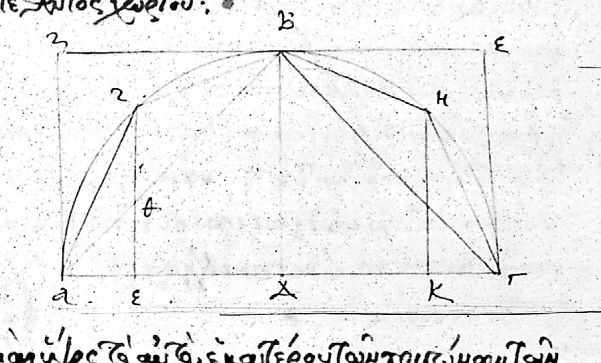
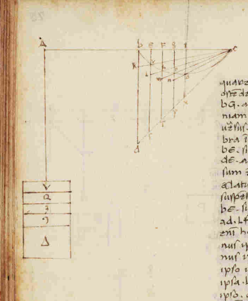
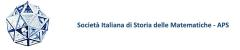
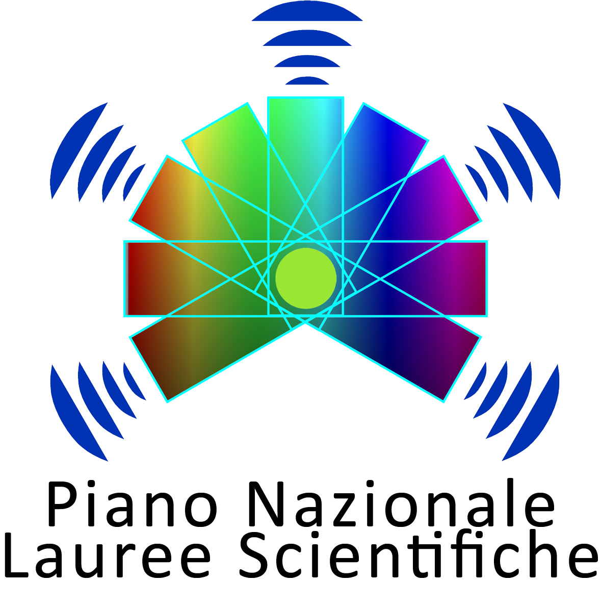
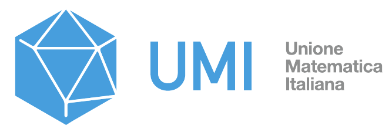

La Scuola è dedicata alla lettura diretta dei testi della tradizione matematica nel loro contesto storico e culturale. In questa prima edizione sarà esaminata la Quadratura della parabola di Archimede.
L'attività propone un percorso centrato sull'analisi delle fonti e sulla ricostruzione delle tecniche della matematica antica, con particolare attenzione ai linguaggi matematici del tempo e alla lettura delle opere nel loro contesto scientifico.


